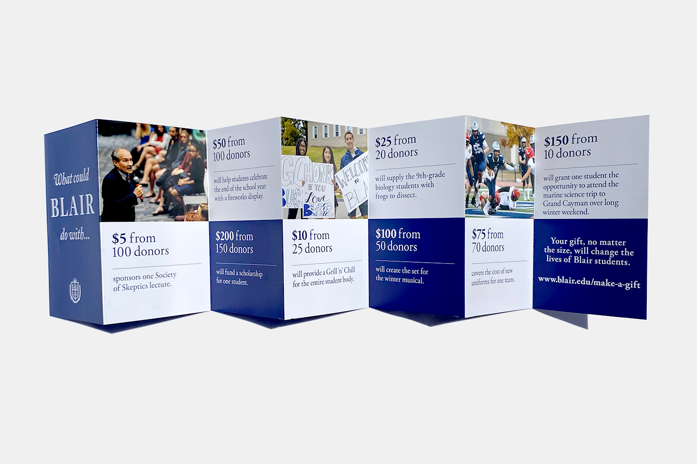

Freelance Work

Blair Academy, a long-standing institution located in northwestern New Jersey, commissioned me to design its Fall 2022 Fundraising Brochure.

After Blair's marketing team sent me their copy, I suggested we use an accordion fold to organize the document. The reason being, an accordion fold allows the reader to browse the document one page at a time or spread it flat to browse all the donations at once. Blair accepted my suggestion on account of its versatility and I got to work on the finer details of the piece.

I set the type within a clear visual hierarchy and tried to use as few graphic elements as possible to create a clean and easy reading experience. In two weeks I completed the project and sent the final document to Blair.
